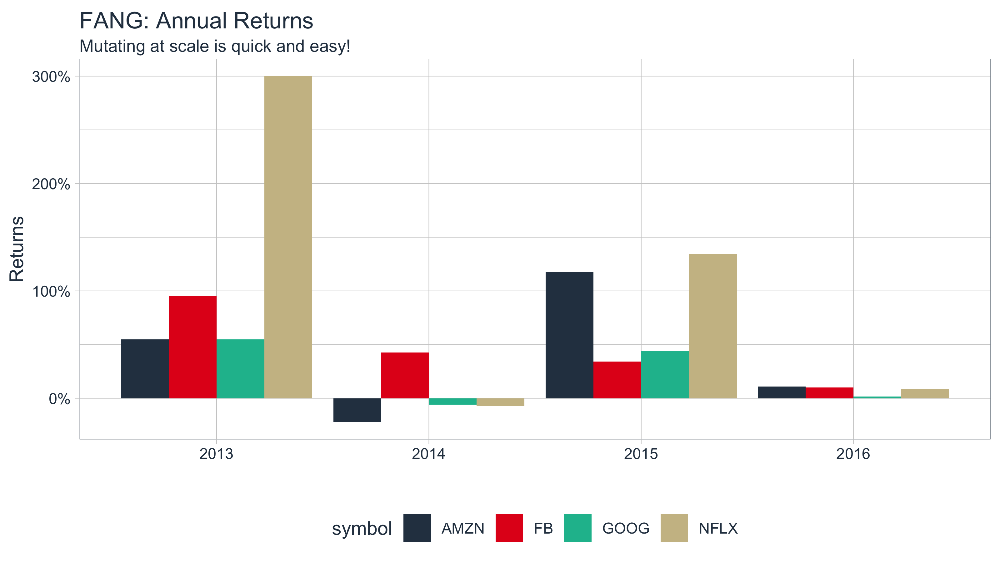
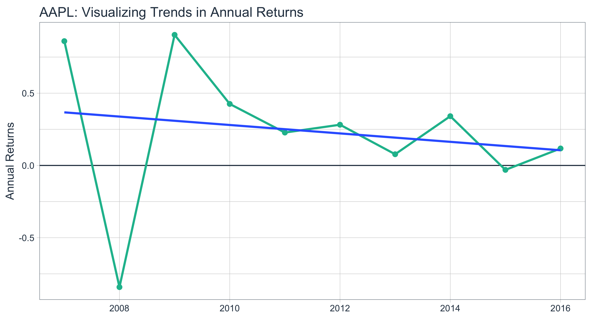

vignettes/TQ03-scaling-and-modeling-with-tidyquant.Rmd
TQ03-scaling-and-modeling-with-tidyquant.RmdDesigned for the data science workflow of the
tidyverse
The greatest benefit to tidyquant is the ability to apply the data science workflow to easily model and scale your financial analysis as described in R for Data Science. Scaling is the process of creating an analysis for one asset and then extending it to multiple groups. This idea of scaling is incredibly useful to financial analysts because typically one wants to compare many assets to make informed decisions. Fortunately, the tidyquant package integrates with the tidyverse making scaling super simple!
All tidyquant functions return data in the tibble (tidy data frame) format, which allows for interaction within the tidyverse. This means we can:
%>%) for chaining operationsdplyr and tidyr: select, filter, group_by, nest/unnest, spread/gather, etcpurrr: mapping functions with map
We’ll go through some useful techniques for getting and manipulating groups of data.
A very basic example is retrieving the stock prices for multiple stocks. There are three primary ways to do this:
## # A tibble: 756 x 8
## symbol date open high low close volume adjusted
## <chr> <date> <dbl> <dbl> <dbl> <dbl> <dbl> <dbl>
## 1 AAPL 2016-01-04 103. 105. 102 105. 67649400 98.4
## 2 AAPL 2016-01-05 106. 106. 102. 103. 55791000 96.0
## 3 AAPL 2016-01-06 101. 102. 99.9 101. 68457400 94.1
## 4 AAPL 2016-01-07 98.7 100. 96.4 96.4 81094400 90.1
## 5 AAPL 2016-01-08 98.6 99.1 96.8 97.0 70798000 90.6
## 6 AAPL 2016-01-11 99.0 99.1 97.3 98.5 49739400 92.1
## 7 AAPL 2016-01-12 101. 101. 98.8 100. 49154200 93.4
## 8 AAPL 2016-01-13 100. 101. 97.3 97.4 62439600 91.0
## 9 AAPL 2016-01-14 98.0 100. 95.7 99.5 63170100 93.0
## 10 AAPL 2016-01-15 96.2 97.7 95.4 97.1 79833900 90.8
## # … with 746 more rowsThe output is a single level tibble with all or the stock prices in one tibble. The auto-generated column name is “symbol”, which can be pre-emptively renamed by giving the vector a name (e.g. stocks <- c("AAPL", "GOOG", "FB")) and then piping to tq_get.
First, get a stock list in data frame format either by making the tibble or retrieving from tq_index / tq_exchange. The stock symbols must be in the first column.
stock_list <- tibble(stocks = c("AAPL", "JPM", "CVX"),
industry = c("Technology", "Financial", "Energy"))
stock_list## # A tibble: 3 x 2
## stocks industry
## <chr> <chr>
## 1 AAPL Technology
## 2 JPM Financial
## 3 CVX EnergySecond, send the stock list to tq_get. Notice how the symbol and industry columns are automatically expanded the length of the stock prices.
## # A tibble: 756 x 9
## stocks industry date open high low close volume adjusted
## <chr> <chr> <date> <dbl> <dbl> <dbl> <dbl> <dbl> <dbl>
## 1 AAPL Technology 2016-01-04 103. 105. 102 105. 67649400 98.4
## 2 AAPL Technology 2016-01-05 106. 106. 102. 103. 55791000 96.0
## 3 AAPL Technology 2016-01-06 101. 102. 99.9 101. 68457400 94.1
## 4 AAPL Technology 2016-01-07 98.7 100. 96.4 96.4 81094400 90.1
## 5 AAPL Technology 2016-01-08 98.6 99.1 96.8 97.0 70798000 90.6
## 6 AAPL Technology 2016-01-11 99.0 99.1 97.3 98.5 49739400 92.1
## 7 AAPL Technology 2016-01-12 101. 101. 98.8 100. 49154200 93.4
## 8 AAPL Technology 2016-01-13 100. 101. 97.3 97.4 62439600 91.0
## 9 AAPL Technology 2016-01-14 98.0 100. 95.7 99.5 63170100 93.0
## 10 AAPL Technology 2016-01-15 96.2 97.7 95.4 97.1 79833900 90.8
## # … with 746 more rowsGet an index…
## # A tibble: 30 x 8
## symbol company identifier sedol weight sector shares_held local_currency
## <chr> <chr> <chr> <chr> <dbl> <chr> <dbl> <chr>
## 1 BA Boeing Com… 09702310 2108… 0.0950 Indust… 5457203 USD
## 2 HD Home Depot… 43707610 2434… 0.0593 Consum… 5457203 USD
## 3 AAPL Apple Inc. 03783310 2046… 0.0589 Inform… 5457203 USD
## 4 UNH UnitedHeal… 91324P10 2917… 0.0573 Health… 5457203 USD
## 5 MCD McDonald's… 58013510 2550… 0.0542 Consum… 5457203 USD
## 6 GS Goldman Sa… 38141G10 2407… 0.0512 Financ… 5457203 USD
## 7 V Visa Inc. … 92826C83 B2PZ… 0.0448 Inform… 5457203 USD
## 8 MMM 3M Company 88579Y10 2595… 0.0390 Indust… 5457203 USD
## 9 TRV Travelers … 89417E10 2769… 0.0362 Financ… 5457203 USD
## 10 IBM Internatio… 45920010 2005… 0.0361 Inform… 5457203 USD
## # … with 20 more rows…or, get an exchange.
Send the index or exchange to tq_get. Important Note: This can take several minutes depending on the size of the index or exchange, which is why only the first three stocks are evaluated in the vignette.
## # A tibble: 7,596 x 15
## symbol company identifier sedol weight sector shares_held local_currency
## <chr> <chr> <chr> <chr> <dbl> <chr> <dbl> <chr>
## 1 BA Boeing… 09702310 2108… 0.0950 Indus… 5457203 USD
## 2 BA Boeing… 09702310 2108… 0.0950 Indus… 5457203 USD
## 3 BA Boeing… 09702310 2108… 0.0950 Indus… 5457203 USD
## 4 BA Boeing… 09702310 2108… 0.0950 Indus… 5457203 USD
## 5 BA Boeing… 09702310 2108… 0.0950 Indus… 5457203 USD
## 6 BA Boeing… 09702310 2108… 0.0950 Indus… 5457203 USD
## 7 BA Boeing… 09702310 2108… 0.0950 Indus… 5457203 USD
## 8 BA Boeing… 09702310 2108… 0.0950 Indus… 5457203 USD
## 9 BA Boeing… 09702310 2108… 0.0950 Indus… 5457203 USD
## 10 BA Boeing… 09702310 2108… 0.0950 Indus… 5457203 USD
## # … with 7,586 more rows, and 7 more variables: date <date>, open <dbl>,
## # high <dbl>, low <dbl>, close <dbl>, volume <dbl>, adjusted <dbl>You can use any applicable “getter” to get data for every stock in an index or an exchange! This includes: “stock.prices”, “key.ratios”, “key.stats”, and more.
We can pipe a tibble of stock symbols to a mutation that maps the tq_get(get = "stock.prices") function. The result is all of the stock prices in nested format.
tibble(symbol = c("AAPL", "GOOG", "AMZN", "FB")) %>%
mutate(stock.prices = map(.x = symbol, ~ tq_get(.x, get = "stock.prices")))## # A tibble: 4 x 2
## symbol stock.prices
## <chr> <list>
## 1 AAPL <tibble [2,532 × 7]>
## 2 GOOG <tibble [2,532 × 7]>
## 3 AMZN <tibble [2,532 × 7]>
## 4 FB <tibble [1,933 × 7]>In financial analysis, it’s very common to need data from various sources to combine in an analysis. For this reason multiple get options (“compound getters”) can be used to return a “compound get”. A quick example:
## # A tibble: 1 x 3
## symbol stock.prices dividends
## <chr> <list> <list>
## 1 GOOG <tibble [2,532 × 7]> <tibble [0 × 2]>This returns the stock prices and dividends for each stock as one nested data frame! Any of the get options that accept stock symbols can be used in this manner: "stock.prices", "key.ratios", "key.stats", "dividends", and "splits".
Once you get the data, you typically want to do something with it. You can easily do this at scale. Let’s get the yearly returns for multiple stocks using tq_transmute. First, get the prices. We’ll use the FANG data set, but you typically will use tq_get to retrieve data in “tibble” format.
## # A tibble: 4,032 x 8
## symbol date open high low close volume adjusted
## <chr> <date> <dbl> <dbl> <dbl> <dbl> <dbl> <dbl>
## 1 FB 2013-01-02 27.4 28.2 27.4 28 69846400 28
## 2 FB 2013-01-03 27.9 28.5 27.6 27.8 63140600 27.8
## 3 FB 2013-01-04 28.0 28.9 27.8 28.8 72715400 28.8
## 4 FB 2013-01-07 28.7 29.8 28.6 29.4 83781800 29.4
## 5 FB 2013-01-08 29.5 29.6 28.9 29.1 45871300 29.1
## 6 FB 2013-01-09 29.7 30.6 29.5 30.6 104787700 30.6
## 7 FB 2013-01-10 30.6 31.5 30.3 31.3 95316400 31.3
## 8 FB 2013-01-11 31.3 32.0 31.1 31.7 89598000 31.7
## 9 FB 2013-01-14 32.1 32.2 30.6 31.0 98892800 31.0
## 10 FB 2013-01-15 30.6 31.7 29.9 30.1 173242600 30.1
## # … with 4,022 more rowsSecond, use group_by to group by stock symbol. Third, apply the mutation. We can do this in one easy workflow. The periodReturns function is applied to each group of stock prices, and a new data frame was returned with the annual returns in the correct periodicity.
FANG_returns_yearly <- FANG %>%
group_by(symbol) %>%
tq_transmute(select = adjusted,
mutate_fun = periodReturn,
period = "yearly",
col_rename = "yearly.returns") Last, we can visualize the returns.
FANG_returns_yearly %>%
ggplot(aes(x = year(date), y = yearly.returns, fill = symbol)) +
geom_bar(position = "dodge", stat = "identity") +
labs(title = "FANG: Annual Returns",
subtitle = "Mutating at scale is quick and easy!",
y = "Returns", x = "", color = "") +
scale_y_continuous(labels = scales::percent) +
theme_tq() +
scale_fill_tq()
Eventually you will want to begin modeling (or more generally applying functions) at scale! One of the best features of the tidyverse is the ability to map functions to nested tibbles using purrr. From the Many Models chapter of “R for Data Science”, we can apply the same modeling workflow to financial analysis. Using a two step workflow:
Let’s go through an example to illustrate.
In this example, we’ll use a simple linear model to identify the trend in annual returns to determine if the stock returns are decreasing or increasing over time.
First, let’s come up with a function to help us collect annual log returns. The function below performs three operations internally. It first gets the stock prices using tq_get(). Then, it mutates the stock prices to period returns using tq_transmute(). We add the type = "log" and period = "monthly" arguments to ensure we retrieve a tibble of monthly log returns. Last, we take the mean of the monthly returns to get MMLR.
get_annual_returns <- function(stock.symbol) {
stock.symbol %>%
tq_get(get = "stock.prices",
from = "2007-01-01",
to = "2016-12-31") %>%
tq_transmute(select = adjusted,
mutate_fun = periodReturn,
type = "log",
period = "yearly")
}Let’s test get_annual_returns out. We now have the annual log returns over the past ten years.
## # A tibble: 10 x 2
## date yearly.returns
## <date> <dbl>
## 1 2007-12-31 0.860
## 2 2008-12-31 -0.842
## 3 2009-12-31 0.904
## 4 2010-12-31 0.426
## 5 2011-12-30 0.228
## 6 2012-12-31 0.282
## 7 2013-12-31 0.0776
## 8 2014-12-31 0.341
## 9 2015-12-31 -0.0306
## 10 2016-12-30 0.118Let’s visualize to identify trends. We can see from the linear trend line that AAPL’s stock returns are declining.
AAPL_annual_log_returns %>%
ggplot(aes(x = year(date), y = yearly.returns)) +
geom_hline(yintercept = 0, color = palette_light()[[1]]) +
geom_point(size = 2, color = palette_light()[[3]]) +
geom_line(size = 1, color = palette_light()[[3]]) +
geom_smooth(method = "lm", se = FALSE) +
labs(title = "AAPL: Visualizing Trends in Annual Returns",
x = "", y = "Annual Returns", color = "") +
theme_tq()
Now, we can get the linear model using the lm() function. However, there is one problem: the output is not “tidy”.
##
## Call:
## lm(formula = yearly.returns ~ year(date), data = AAPL_annual_log_returns)
##
## Coefficients:
## (Intercept) year(date)
## 58.86283 -0.02915We can utilize the broom package to get “tidy” data from the model. There’s three primary functions:
augment: adds columns to the original data such as predictions, residuals and cluster assignmentsglance: provides a one-row summary of model-level statisticstidy: summarizes a model’s statistical findings such as coefficients of a regressionWe’ll use tidy to retrieve the model coefficients.
## # A tibble: 2 x 5
## term estimate std.error statistic p.value
## <chr> <dbl> <dbl> <dbl> <dbl>
## 1 (Intercept) 58.9 113. 0.520 0.617
## 2 year(date) -0.0291 0.0562 -0.518 0.618Adding to our workflow, we have the following:
get_model <- function(stock.symbol) {
annual_returns <- get_annual_returns(stock.symbol)
mod <- lm(yearly.returns ~ year(date), data = annual_returns)
tidy(mod)
}Testing it out on a single stock. We can see that the “term” that contains the direction of the trend (the slope) is “year(date)”. The interpetation is that as year increases one unit, the annual returns decrease by 3%.
## # A tibble: 2 x 5
## term estimate std.error statistic p.value
## <chr> <dbl> <dbl> <dbl> <dbl>
## 1 (Intercept) 58.9 113. 0.520 0.617
## 2 year(date) -0.0291 0.0562 -0.518 0.618Now that we have identified the trend direction, it looks like we are ready to scale.
Once the analysis for one stock is done scale to many stocks is simple. For brevity, we’ll randomly sample ten stocks from the S&P500 with a call to dplyr::sample_n().
## # A tibble: 5 x 8
## symbol company identifier sedol weight sector shares_held local_currency
## <chr> <chr> <chr> <chr> <dbl> <chr> <dbl> <chr>
## 1 IPGP IPG Photo… 44980X10 2698… 1.89e-4 Informa… 387370 USD
## 2 SCHW Charles S… 80851310 2779… 1.72e-3 Financi… 12739475 USD
## 3 UDR UDR Inc. 90265310 2727… 5.83e-4 Real Es… 3206653 USD
## 4 NVR NVR Inc. 62944T10 2637… 5.00e-4 Consume… 37060 USD
## 5 BWA BorgWarne… 09972410 2111… 2.98e-4 Consume… 2248867 USDWe can now apply our analysis function to the stocks using dplyr::mutate and purrr::map. The mutate() function adds a column to our tibble, and the map() function maps our custom get_model function to our tibble of stocks using the symbol column. The tidyr::unnest function unrolls the nested data frame so all of the model statistics are accessable in the top data frame level. The filter, arrange and select steps just manipulate the data frame to isolate and arrange the data for our viewing.
stocks_model_stats <- stocks %>%
mutate(model = map(symbol, get_model)) %>%
unnest() %>%
filter(term == "year(date)") %>%
arrange(desc(estimate)) %>%
select(-term)
stocks_model_stats## # A tibble: 5 x 12
## symbol company identifier sedol weight sector shares_held local_currency
## <chr> <chr> <chr> <chr> <dbl> <chr> <dbl> <chr>
## 1 UDR UDR In… 90265310 2727… 5.83e-4 Real … 3206653 USD
## 2 SCHW Charle… 80851310 2779… 1.72e-3 Finan… 12739475 USD
## 3 IPGP IPG Ph… 44980X10 2698… 1.89e-4 Infor… 387370 USD
## 4 NVR NVR In… 62944T10 2637… 5.00e-4 Consu… 37060 USD
## 5 BWA BorgWa… 09972410 2111… 2.98e-4 Consu… 2248867 USD
## # … with 4 more variables: estimate <dbl>, std.error <dbl>, statistic <dbl>,
## # p.value <dbl>We’re done! We now have the coefficient of the linear regression that tracks the direction of the trend line. We can easily extend this type of analysis to larger lists or stock indexes. For example, the entire S&P500 could be analyzed removing the sample_n() following the call to tq_index("SP500").
Eventually you will run into a stock index, stock symbol, FRED data code, etc that cannot be retrieved. Possible reasons are:
This becomes painful when scaling if the functions return errors. So, the tq_get() function is designed to handle errors gracefully. What this means is an NA value is returned when an error is generated along with a gentle error warning.
## [1] NAThere are pros and cons to this approach that you may not agree with, but I believe helps in the long run. Just be aware of what happens:
Pros: Long running scripts are not interrupted because of one error
Cons: Errors can be inadvertently handled or flow downstream if the users does not read the warnings
Let’s see an example when using tq_get() to get the stock prices for a long list of stocks with one BAD APPLE. The argument complete_cases comes in handy. The default is TRUE, which removes “bad apples” so future analysis have complete cases to compute on. Note that a gentle warning stating that an error occurred and was dealt with by removing the rows from the results.
## Warning: x = 'BAD APPLE', get = 'stock.prices': Error in getSymbols.yahoo(Symbols = "BAD APPLE", env = <environment>, : Unable to import "BAD APPLE".
## BAD APPLE download failed after two attempts. Error message:
## HTTP error 400.
## Removing BAD APPLE.## # A tibble: 5,064 x 8
## symbol date open high low close volume adjusted
## <chr> <date> <dbl> <dbl> <dbl> <dbl> <dbl> <dbl>
## 1 AAPL 2010-01-04 30.5 30.6 30.3 30.6 123432400 26.6
## 2 AAPL 2010-01-05 30.7 30.8 30.5 30.6 150476200 26.6
## 3 AAPL 2010-01-06 30.6 30.7 30.1 30.1 138040000 26.2
## 4 AAPL 2010-01-07 30.2 30.3 29.9 30.1 119282800 26.2
## 5 AAPL 2010-01-08 30.0 30.3 29.9 30.3 111902700 26.3
## 6 AAPL 2010-01-11 30.4 30.4 29.8 30.0 115557400 26.1
## 7 AAPL 2010-01-12 29.9 30.0 29.5 29.7 148614900 25.8
## 8 AAPL 2010-01-13 29.7 30.1 29.2 30.1 151473000 26.2
## 9 AAPL 2010-01-14 30.0 30.1 29.9 29.9 108223500 26.0
## 10 AAPL 2010-01-15 30.1 30.2 29.4 29.4 148516900 25.6
## # … with 5,054 more rowsNow switching complete_cases = FALSE will retain any errors as NA values in a nested data frame. Notice that the error message and output change. The error message now states that the NA values exist in the output and the return is a “nested” data structure.
## Warning: x = 'BAD APPLE', get = 'stock.prices': Error in getSymbols.yahoo(Symbols = "BAD APPLE", env = <environment>, : Unable to import "BAD APPLE".
## BAD APPLE download failed after two attempts. Error message:
## HTTP error 400.## Warning in value[[3L]](cond): Returning as nested data frame.## # A tibble: 3 x 2
## symbol stock.prices
## <chr> <list>
## 1 AAPL <tibble [2,532 × 7]>
## 2 GOOG <tibble [2,532 × 7]>
## 3 BAD APPLE <lgl [1]>In both cases, the prudent user will review the warnings to determine what happened and whether or not this is acceptable. In the complete_cases = FALSE example, if the user attempts to perform downstream computations at scale, the computations will likely fail grinding the analysis to a hault. But, the advantage is that the user will more easily be able to filter to the problem childs to determine what happened and decide whether this is acceptable or not.